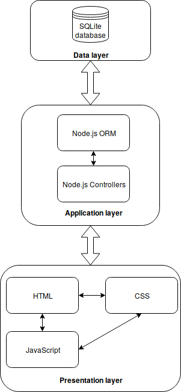
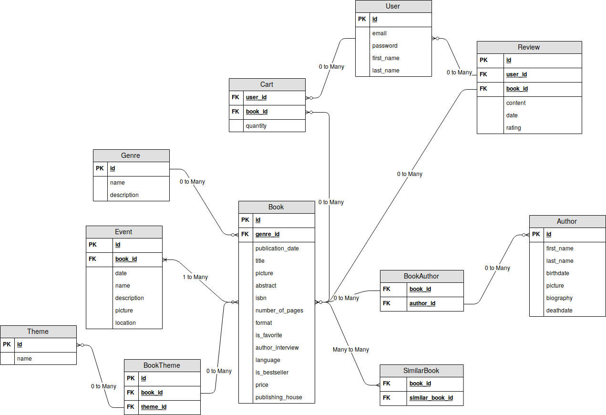

Deliverable D1
| Member n. | Role | First name | Last Name | Matricola | Email address |
|---|---|---|---|---|---|
| 1 | administrator | Leonardo | Mosciatti | 845344 | leonardo.mosciatti@mail.polimi.it |
Deliverable D0: the web application is accessible at this address.
Deliverable D2: the YAML or JSON file containing the specification of the app API can be found at this address.
Deliverable D3: the SwaggerUI page of the same API is available at this address.
Deliverable D4: the source code of D0 is available as a zip file at this address.
Deliverable D5: the address of the online source control repository is available this address. We hereby declare that this is a private repository and, upon request, we will give access to the instructors.

The only resources passed between the presentation and the application layer are in the form of raw datas with JSON format. This means that no HTML can be retrieved from the application layer, thus no HTML is rendered server-side.
Following the Richardson Maturity Level, the application could be placed at (at least) level 3. GET and POST verbs are the most used because there was not much need to manipulate resources. The cart model uses also the DELETE, PATCH and PUT verbs to control the deletion, quantity changes and addition of books to the cart.
All REST constraints are respected, the application has a unique base URI to which the requests should be performed, it uses standard HTTP verbs, and defines a consistent media type for all its requests (application/json).
A note should be done about how the application handles the relationships between the various models. All of them are in the form of unique IDs of the related model. For example the book model exposes in its representation an array of authors_ids representing the authors of that book. This decision was taken because it was decided to have as much flexibility as possible given the low complexity of the endpoints.
It could be argued that since the relations are represented as unique ids and the hyperlinks to represent them are only a matter of concatenating the base URI, the endpoint and the id the application could be at level 4 in the Richardson Maturity Level.

The principal resources are mapped 1-to-1 from the ER diagram to the OpenAPI data model apart from the relations, the User model and the Cart model.
{0,1,Many}-To-Many relations are represented as arrays of ids in the OpenAPI model (for example the relation SimilarBook is represented by the array similar_books_ids in the Book model, or the relation BookTheme is represented as an array of books_ids in the Theme model and an array of themes_ids in the Book model).
For the User data model, three OpenAPI models were introduced User, UserLogin and UserRegistration respectively for displaying the logged user's details, handling login, and registering new users. Three different resources were necessary because those three actions had different needs.
For the Cart data model were created the Cart model which contains an array of BookQuantity models that represents the quantities of the books that a user has in its cart.
Finally an Error model was used to give as much information as possible when a request had some kind of error.
The backend implementation were written using JetBrains Intellij IDE. The language chosen was Node.js and part of the code was generated with the swagger-codegen utility. The library Sequelize was used to manage the database, and the swagger library for the routing of the endpoints and logic that links them. The HTTP framework used was swagger's default: connect. Other libraries were used to handle cookies and authentication.
How did you make sure your web application adheres to the provided OpenAPI specification?
In the frontend all the requests concerning the logic of the application are made to the API endpoint. Consequently the constraints given by the API must be respected. The models specified in the OpenAPI specification are controlled and the requests are parsed in the backend to verify that they adheres to said models.
Why do you think your web application adheres to common practices to partition the web application (static assets vs. application data)
The application does mainly two things, serving an API and serving static files via HTTP. The static files are created in such a way that they are able to communicate with the API, in this way those two things are kept separeted and serving the static assets does not interferes in any way with the application data.
Describe synthetically why and how did you manage session state, what are the state change triggering actions (e.g., POST to login etc..).
The session state is managed in the backend. Every request that requires the user to be authenticated cannot be performed if the user is not logged in. The login procedure consists in a POST request that must be made to /user/login endpoint using the UserLogin OpenAPI model. If the credentials are valid a Set-Cookie HTTP header is in the response of said request, and it contains a cookie called user_sid. The user_sid cookie contains a string which uniquely identifies the session for the user. Following requests that requires authentication can then be made setting the Cookie HTTP header with the user_sid cookie, and access to the resources will be granted.
Which technology did you use (relational or a no-SQL database) for managing the data model?
The data is stored in a SQLite database which is a relational database.
Two APIs have inspired the OpenAPI specification:
this works were gained. Also the concept of Promises and asynchronous code had been made much more clear.